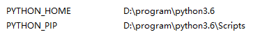
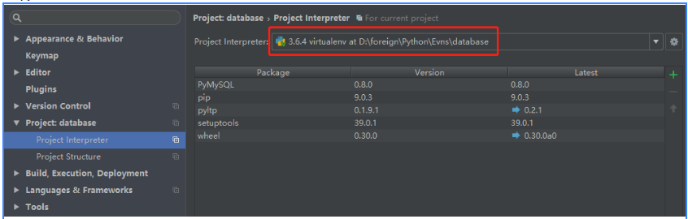
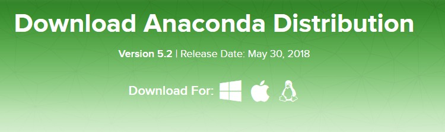
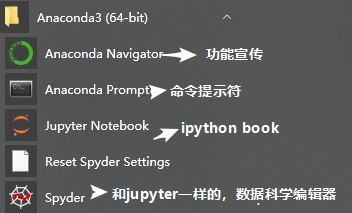
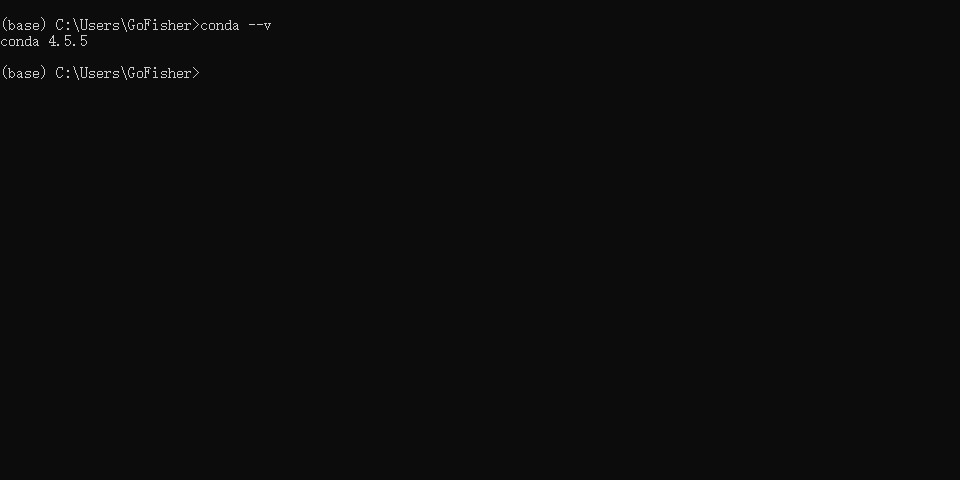
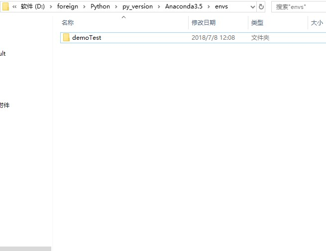
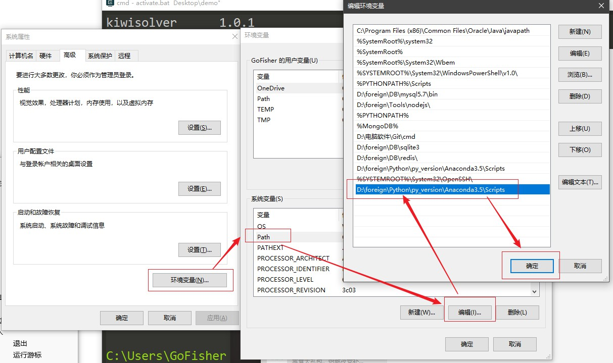
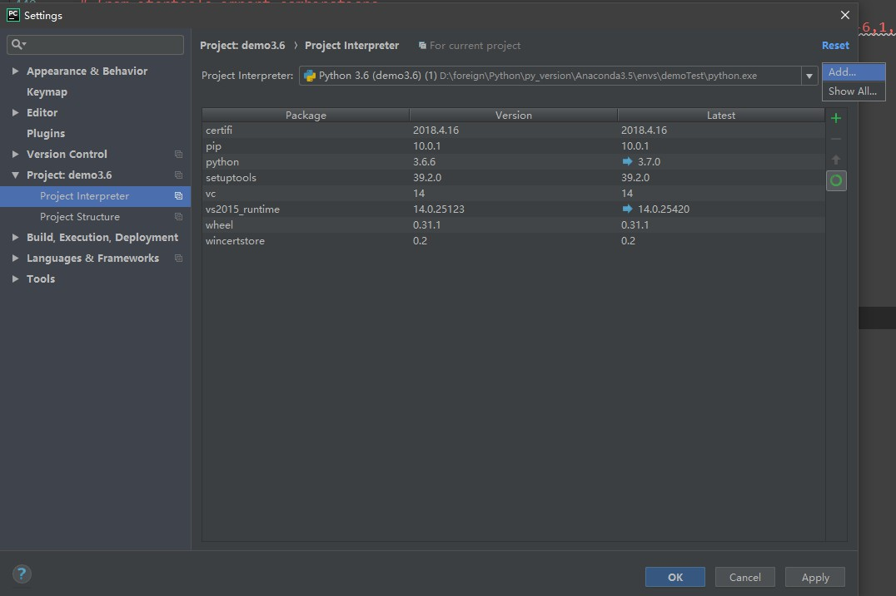
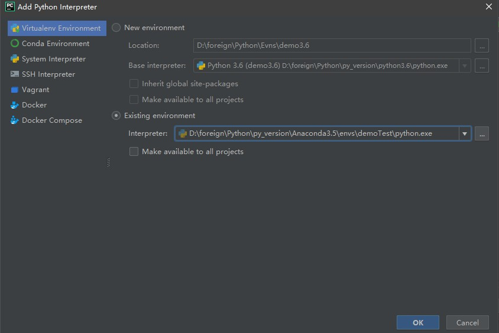
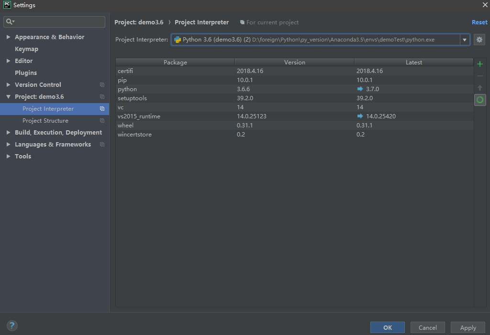

Python虚拟环境
在开发Python应用程序的时候，系统安装的Python3只有一个版本：3.4。所有第三方的包都会被
pip安装到Python3的site-packages目录下。如果我们要同时开发多个应用程序，那这些应用程序都会共用一个Python，就是安装在系统的Python 3。如果应用A需要jinja 2.7，而应用B需要jinja 2.6怎么办？这种情况下，每个应用可能需要各自拥有一套“独立”的Python运行环境。virtualenv就是用来为一个应用创建一套“隔离”的Python运行环境。
- 已经装好python，并且配置好环境目录，在系统环境中添加如下变量名，并加入系统的Path中
1.通过pip install virtualenv –命令可以安装虚拟环境
安装命令：python -m pip install -i https://pypi.douban.com/simple/ virtualenv
卸载命令：python -m pip uninstall virtualenv
2.安装完成后可以通过 virtualenv + 名字 就可以创建虚拟环境，但是环境创建存放在当前命令行所在的根目录会创建对应的文件夹
带指定版本python的虚拟环境：virtualenv -p python版本的完整路径到.exe为止
3.安装虚拟环境管理工具（virtualenvwrapper）：
- 将所有虚拟环境整合在一个目录下
- 管理（新增，删除，复制）虚拟环境
- 切换虚拟环境
python -m pip install -I https://pypi.douban.com/simple/ virtualenvwrapper-win
python -m pip install virtualenvwrapper-win
如果没有加-win出现不了workon的命令
1 | 此时virtualenvwrapper就可以使用了。virtualenvwrapper的基本使用方式： |
列出虚拟环境列表
workon 或者 lsvirtualenvpytho新建虚拟环境
mkvirtualenv [虚拟环境名称]
或者 virtualenv -p /usr/bin/python2.7 [虚拟环境名字]启动/切换虚拟环境
workon [虚拟环境名称]删除虚拟环境
rmvirtualenv [虚拟环境名称]
或者 Rmvirtualenv –python的exe文件目录 [虚拟环境名称]离开虚拟环境，和virutalenv一样的命令
deactivate.bat
4.修改虚拟环境的默认目录，然后后面创建虚拟环境命令一定用（mkvirtualen，这样就可以使建立的虚拟环境存到指定文件夹。
打开环境变量，创建系统变量：变量名为：WORKON_HOME D:\foreign\Python\Evns：为要存放的位置
5.用命令行进入虚拟环境的目录文件
Workon –查看已经安装好的虚拟环境 workon + 虚拟环境名字 可以进入相应的虚拟环境
退出为deactivate.bat
Mkvirtualenv +新建虚拟环境名字 会在配置后的环境中生成虚拟环境
6.pycharm打开目录是 file中的设置选择对应的解释器
Anaconda的虚拟环境使用
Anaconda下载安装
https://anaconda.org/

使用Anaconda优势：
- anaconda集成了机器学习所需的python科学计算库
- 机器学习中模型实现所用python版本不一致，通过自带的管理工具Conda创建虚拟环境可以完成python2和python3的切换。
选择合适自己的版本进行下载，下载完成进行软件安装，安装成功后，在开始菜单多出如下文件夹：

点击Anacodda Prompt,就是打开啦conda的命令提示符，如下显示：

管理conda
1 | C:\Users\GoFisher |
管理工作环境
conda完整的命令参数1
2
3
4
5
6
7
8
9
10
11
12
13
14
15
16
17
18
19
20
21
22
23
24
25
26
27
28
29
30
31
32
33
34
35
36
37
38
39
40
41
42
43
44
45
46
47
48
49
50
51
52
53
54
55
56
57
58
59
60
61
62
63
64
65
66
67
68
69
70
71
72
73
74
75
76
77
78
79
80
81
82
83
84
85
86
87
88
89
90
91
92
93
94
95
96
97
98
99
100
101λ conda create -h
usage: conda create [-h] [--shortcuts] [--no-shortcuts] [-y] [--dry-run] [-f]
[--file FILE] [--no-deps] [--only-deps] [-m] [-C]
[--use-local] [--offline] [--no-pin] [-c CHANNEL]
[--override-channels] [-n ENVIRONMENT | -p PATH] [-q]
[--copy] [-k] [--update-dependencies]
[--no-update-dependencies] [--channel-priority]
[--no-channel-priority] [--clobber] [--show-channel-urls]
[--no-show-channel-urls] [--download-only] [--json]
[--debug] [--verbose] [--clone ENV]
[--no-default-packages]
[package_spec [package_spec ...]]
Create a new conda environment from a list of specified packages. To use the created environment, use 'source activate envname' look in that directory first. This command requires either the -n NAME or -p PREFIX option.
Options:
positional arguments:
package_spec Packages to install or update in the conda
environment.
optional arguments:
-h, --help Show this help message and exit.
--shortcuts Install start menu shortcuts
--no-shortcuts Don't install start menu shortcuts
-y, --yes Do not ask for confirmation.
--dry-run Only display what would have been done.
-f, --force Force install (even when package already installed).
--file FILE Read package versions from the given file. Repeated
file specifications can be passed (e.g. --file=file1
--file=file2).
--no-deps Do not install, update, remove, or change
dependencies. This WILL lead to broken environments
and inconsistent behavior. Use at your own risk.
--only-deps Only install dependencies.
-m, --mkdir Create the environment directory if necessary.
-C, --use-index-cache
Use cache of channel index files, even if it has
expired.
--use-local Use locally built packages.
--offline Offline mode, don't connect to the Internet.
--no-pin Ignore pinned file.
-c CHANNEL, --channel CHANNEL
Additional channel to search for packages. These are
URLs searched in the order they are given (including
file:// for local directories). Then, the defaults or
channels from .condarc are searched (unless
--override-channels is given). You can use 'defaults'
to get the default packages for conda, and 'system' to
get the system packages, which also takes .condarc
into account. You can also use any name and the
.condarc channel_alias value will be prepended. The
default channel_alias is http://conda.anaconda.org/.
--override-channels Do not search default or .condarc channels. Requires
--channel.
-n ENVIRONMENT, --name ENVIRONMENT
Name of environment.
-p PATH, --prefix PATH
Full path to environment prefix.
-q, --quiet Do not display progress bar.
--copy Install all packages using copies instead of hard- or
soft-linking.
-k, --insecure Allow conda to perform "insecure" SSL connections and
transfers. Equivalent to setting 'ssl_verify' to
'false'.
--update-dependencies, --update-deps
Update dependencies. Overrides the value given by
`conda config --show update_deps`.
--no-update-dependencies, --no-update-deps
Don't update dependencies. Overrides the value given
by `conda config --show update_deps`.
--channel-priority, --channel-pri, --chan-pri
Channel priority takes precedence over package
version. Overrides the value given by `conda config
--show channel_priority`.
--no-channel-priority, --no-channel-pri, --no-chan-pri
Package version takes precedence over channel
priority. Overrides the value given by `conda config
--show channel_priority`.
--clobber Allow clobbering of overlapping file paths within
packages, and suppress related warnings.
--show-channel-urls Show channel urls. Overrides the value given by `conda
config --show show_channel_urls`.
--no-show-channel-urls
Don't show channel urls. Overrides the value given by
`conda config --show show_channel_urls`.
--download-only Solve an environment and ensure package caches are
populated, but exit prior to unlinking and linking
packages into the prefix.
--json Report all output as json. Suitable for using conda
programmatically.
--debug Show debug output.
--verbose, -v Use once for info, twice for debug, three times for
trace.
--clone ENV Path to (or name of) existing local environment.
--no-default-packages
Ignore create_default_packages in the .condarc file.
Examples:
conda create -n myenv sqlite
最常用的conda参数1
2
3
4
5
6
7
8# 默认创建在Anaconda下的envs文件中
conda create --name 项目名 python="python3.6(2.7)" numpy(可以安装指定名字的包名)
例如：conda create --name demoTest python=3.6
# 指定环境创建的路径，注意不能和--n参数一起使用
conda create -p "绝对路径+环境名" python="python3.6(2.7)" numpy(可以安装指定名字的包名)
例如：
conda create --name demo2 --path "C:\\Users\\GoFisher\\Desktop" pytho n=2.7
执行结果如下1
2
3
4
5
6
7
8
9
10
11
12
13
14
15
16
17
18
19
20
21
22
23
24
25
26
27
28
29
30
31
32
33
34
35
36
37
38
39
40
41
42
43
44
45
46
47
48
49
50
51
52
53
54C:\Users\GoFisher
λ conda create --name demoTest python=3.6
Solving environment: done
## Package Plan ##
environment location: D:\foreign\Python\py_version\Anaconda3.5\envs\demoTest
added / updated specs:
- python=3.6
The following packages will be downloaded:
package | build
---------------------------|-----------------
wheel-0.31.1 | py36_0 81 KB
setuptools-39.2.0 | py36_0 571 KB
pip-10.0.1 | py36_0 1.8 MB
python-3.6.6 | hea74fb7_0 21.6 MB
------------------------------------------------------------
Total: 24.0 MB
The following NEW packages will be INSTALLED:
certifi: 2018.4.16-py36_0
pip: 10.0.1-py36_0
python: 3.6.6-hea74fb7_0
setuptools: 39.2.0-py36_0
vc: 14-h0510ff6_3
vs2015_runtime: 14.0.25123-3
wheel: 0.31.1-py36_0
wincertstore: 0.2-py36h7fe50ca_0
Proceed ([y]/n)? y
Downloading and Extracting Packages
wheel-0.31.1 | 81 KB | ############# | 100%
setuptools-39.2.0 | 571 KB | ############# | 100%
pip-10.0.1 | 1.8 MB | ############# | 100%
python-3.6.6 | 21.6 MB | ############# | 100%
Preparing transaction: done
Verifying transaction: done
Executing transaction: done
#
# To activate this environment, use:
# > activate demoTest
#
# To deactivate an active environment, use:
# > deactivate
#
# * for power-users using bash, you must source
#
成功创建项目

配置环境变量

列出所有环境
1 | conda info --envs |
结果如下，带星号代表是当前所在的环境1
2
3
4
5
6λ conda info --envs
# conda environments:
#
C:\Users\GoFisher\Desktop\demo
base * D:\foreign\Python\py_version\Anaconda3.5
demoTest D:\foreign\Python\py_version\Anaconda3.5\envs\demoTest
切换环境
1 | 切换环境：deactive.bat |
命令如下1
2
3
4
5
6
7
8
9
10
11
12
13
14
15
16
17
18
19
20
21
22
23
24
25
26
27
28
29
30
31
32
33
34
35
36
37
38
39
40
41
42
43
44
45
46
47
48
49C:\Users\GoFisher
λ conda info --envs
# conda environments:
#
C:\Users\GoFisher\Desktop\demo
base * D:\foreign\Python\py_version\Anaconda3.5
demoTest D:\foreign\Python\py_version\Anaconda3.5\envs\demoTest
C:\Users\GoFisher
λ activate.bat demoTest
C:\Users\GoFisher
(demoTest) λ pip list
Package Version
--------------- ---------
certifi 2018.4.16
cycler 0.10.0
kiwisolver 1.0.1
matplotlib 2.2.2
numpy 1.14.3
pip 10.0.1
pyparsing 2.2.0
python-dateutil 2.7.3
pytz 2018.4
setuptools 39.2.0
six 1.11.0
wheel 0.31.1
wincertstore 0.2
Cache entry deserialization failed, entry ignored
C:\Users\GoFisher
(demoTest) λ conda info --envs
# conda environments:
#
C:\Users\GoFisher\Desktop\demo
base D:\foreign\Python\py_version\Anaconda3.5
demoTest * D:\foreign\Python\py_version\Anaconda3.5\envs\demoTest
C:\Users\GoFisher
(demoTest) λ deactivate.bat
C:\Users\GoFisher
λ conda info --envs
# conda environments:
#
C:\Users\GoFisher\Desktop\demo
base * D:\foreign\Python\py_version\Anaconda3.5
demoTest D:\foreign\Python\py_version\Anaconda3.5\envs\demoTest
复制环境
1 | conda create --name 新复制的名称 --clone 被复制的环境 |
复制demoTest环境，名字为demoTestcopy1
2
3
4
5
6
7
8
9
10
11
12
13
14
15
16
17
18
19
20
21
22
23
24
25C:\Users\GoFisher
λ conda create --name demoTestcopy --clone demoTest
Source: D:\foreign\Python\py_version\Anaconda3.5\envs\demoTest
Destination: D:\foreign\Python\py_version\Anaconda3.5\envs\demoTestcopy
Packages: 8
Files: 0
Preparing transaction: done
Verifying transaction: done
Executing transaction: done
#
# To activate this environment, use
#
# $ conda activate demoTestcopy
#
# To deactivate an active environment, use
#
# $ conda deactivate
C:\Users\GoFisher
λ conda info --envs
# conda environments:
#
C:\Users\GoFisher\Desktop\demo
base * D:\foreign\Python\py_version\Anaconda3.5
demoTest D:\foreign\Python\py_version\Anaconda3.5\envs\demoTest
demoTestcopy D:\foreign\Python\py_version\Anaconda3.5\envs\demoTestcopy
此时多出一个复制的环境名称为demoTestcopy
删除环境
1 | conda remove --name 环境名 --all |
操作如下1
2
3
4
5
6
7
8
9
10
11
12
13
14
15
16
17
18
19
20
21
22
23
24
25
26
27
28
29
30
31
32C:\Users\GoFisher
λ conda remove -n demoTestcopy --all
Remove all packages in environment D:\foreign\Python\py_version\Anaconda3.5\envs\demoTestcopy:
## Package Plan ##
environment location: D:\foreign\Python\py_version\Anaconda3.5\envs\demoTestcopy
The following packages will be REMOVED:
certifi: 2018.4.16-py36_0
pip: 10.0.1-py36_0
python: 3.6.6-hea74fb7_0
setuptools: 39.2.0-py36_0
vc: 14-h0510ff6_3
vs2015_runtime: 14.0.25123-3
wheel: 0.31.1-py36_0
wincertstore: 0.2-py36h7fe50ca_0
Proceed ([y]/n)? y
C:\Users\GoFisher
λ conda info --envs
# conda environments:
#
C:\Users\GoFisher\Desktop\demo
base * D:\foreign\Python\py_version\Anaconda3.5
demoTest D:\foreign\Python\py_version\Anaconda3.5\envs\demoTest
管理Python版本
conda把python视为其中的一个包，通过conda可以很方便的进行管理。
查看python版本
1 | conda search --full-name python |
结果如下，可以在创建虚拟环境的时候用过python的参数选择以下的python版本进行安装。1
2
3
4
5
6
7
8
9
10
11
12
13
14
15
16
17
18
19
20
21
22
23
24
25
26
27
28
29
30
31
32
33
34
35
36
37
38
39
40
41
42
43
44
45
46
47
48
49
50
51
52
53
54
55
56
57
58
59
60
61
62
63
64
65
66
67
68
69
70
71
72
73
74
75
76
77
78
79
80
81
82
83
84
85
86
87
88
89
90
91
92
93
94
95
96
97
98
99
100
101
102
103
104
105
106
107
108
109
110
111
112
113
114
115C:\Users\GoFisher
λ conda search --full-name python
Loading channels: done
# Name Version Build Channel
python 2.6.8 5 pkgs/free
python 2.6.8 6 pkgs/free
python 2.6.9 0 pkgs/free
python 2.6.9 1 pkgs/free
python 2.7.3 2 pkgs/free
python 2.7.3 3 pkgs/free
python 2.7.3 4 pkgs/free
python 2.7.3 5 pkgs/free
python 2.7.3 6 pkgs/free
python 2.7.3 7 pkgs/free
python 2.7.4 0 pkgs/free
python 2.7.5 0 pkgs/free
python 2.7.5 1 pkgs/free
python 2.7.5 2 pkgs/free
python 2.7.6 0 pkgs/free
python 2.7.6 2 pkgs/free
python 2.7.7 0 pkgs/free
python 2.7.7 1 pkgs/free
python 2.7.7 2 pkgs/free
python 2.7.8 0 pkgs/free
python 2.7.9 0 pkgs/free
python 2.7.9 1 pkgs/free
python 2.7.10 0 pkgs/free
python 2.7.10 1 pkgs/free
python 2.7.10 3 pkgs/free
python 2.7.10 4 pkgs/free
python 2.7.10 5 pkgs/free
python 2.7.11 0 pkgs/free
python 2.7.11 1 pkgs/free
python 2.7.11 2 pkgs/free
python 2.7.11 4 pkgs/free
python 2.7.11 5 pkgs/free
python 2.7.12 0 pkgs/free
python 2.7.13 0 pkgs/free
python 2.7.13 1 pkgs/free
python 2.7.13 h1b6d89f_16 pkgs/main
python 2.7.13 h9912b81_15 pkgs/main
python 2.7.13 hb034564_12 pkgs/main
python 2.7.14 h2765ee6_18 pkgs/main
python 2.7.14 h3e68818_15 pkgs/main
python 2.7.14 h4084c39_22 pkgs/main
python 2.7.14 h4a10d90_30 pkgs/main
python 2.7.14 h4a10d90_31 pkgs/main
python 2.7.14 h59f5a59_20 pkgs/main
python 2.7.14 h819644d_16 pkgs/main
python 2.7.14 h8c3f1cb_23 pkgs/main
python 2.7.15 he216670_0 pkgs/main
python 3.3.0 4 pkgs/free
python 3.3.1 0 pkgs/free
python 3.3.2 0 pkgs/free
python 3.3.3 0 pkgs/free
python 3.3.4 0 pkgs/free
python 3.3.5 0 pkgs/free
python 3.3.5 1 pkgs/free
python 3.3.5 2 pkgs/free
python 3.4.0 0 pkgs/free
python 3.4.1 0 pkgs/free
python 3.4.1 1 pkgs/free
python 3.4.1 2 pkgs/free
python 3.4.2 0 pkgs/free
python 3.4.2 1 pkgs/free
python 3.4.3 0 pkgs/free
python 3.4.3 3 pkgs/free
python 3.4.3 4 pkgs/free
python 3.4.3 5 pkgs/free
python 3.4.4 0 pkgs/free
python 3.4.4 1 pkgs/free
python 3.4.4 2 pkgs/free
python 3.4.4 4 pkgs/free
python 3.4.4 5 pkgs/free
python 3.4.5 0 pkgs/free
python 3.5.0 0 pkgs/free
python 3.5.0 1 pkgs/free
python 3.5.0 2 pkgs/free
python 3.5.0 3 pkgs/free
python 3.5.0 4 pkgs/free
python 3.5.1 0 pkgs/free
python 3.5.1 1 pkgs/free
python 3.5.1 2 pkgs/free
python 3.5.1 4 pkgs/free
python 3.5.1 5 pkgs/free
python 3.5.2 0 pkgs/free
python 3.5.3 0 pkgs/free
python 3.5.3 2 pkgs/free
python 3.5.3 3 pkgs/free
python 3.5.4 0 pkgs/free
python 3.5.4 h1357f44_23 pkgs/main
python 3.5.4 hc495aa9_21 pkgs/main
python 3.5.4 hd3c4935_11 pkgs/main
python 3.5.4 hdec4e59_20 pkgs/main
python 3.5.4 hedc2606_15 pkgs/main
python 3.5.5 h0c2934d_0 pkgs/main
python 3.5.5 h0c2934d_1 pkgs/main
python 3.5.5 h0c2934d_2 pkgs/main
python 3.6.0 0 pkgs/free
python 3.6.1 0 pkgs/free
python 3.6.1 2 pkgs/free
python 3.6.2 0 pkgs/free
python 3.6.2 h09676a0_15 pkgs/main
python 3.6.2 h6679aeb_11 pkgs/main
python 3.6.3 h210ce5f_2 pkgs/main
python 3.6.3 h3389d20_0 pkgs/main
python 3.6.3 h3b118a2_4 pkgs/main
python 3.6.3 h9e2ca53_1 pkgs/main
python 3.6.4 h0c2934d_2 pkgs/main
python 3.6.4 h0c2934d_3 pkgs/main
python 3.6.4 h6538335_0 pkgs/main
python 3.6.4 h6538335_1 pkgs/main
python 3.6.5 h0c2934d_0 pkgs/main
python 3.6.6 hea74fb7_0 pkgs/main
python 3.7.0 hea74fb7_0 pkgs/main
Python包管理
列出已安装的包及其版本号
1 | conda list |
查看所有conda支持的包
http://docs.continuum.io/anaconda/pkg-docs.html
搜索包
检测该包是否存在：1
conda search beautifulsoup4
安装一个包
将beautifulsoup4包安装到指定环境bunnies中：1
conda install --name bunnies beautifulsoup4
Tip: 如果未指定安装环境，包将被安装到当前环境。
从Anaconda.org安装一个包
anaconda.org是性质和github.com差不多的一个网站，但并不允许通过注册来下载里边的文件，我们只能通过以下命令来安装一个anaconda.org里存在的包,以安装bottleneck包为例：1
conda isntall --channel https://conda.anaconda.org/pandas bottleneck
通过pip安装一个包
如果要安装一个conda或者anaconda.org不支持的包，可以通过较为普遍的pip包管理工具进行安装，但是pip并不能管理环境、升级python。
Tip：anaconda和miniconda已集成pip，不需要单独安装。
下面命令将安装see包：
pip install see
虚拟环境与Pycharm的结合使用
当创建好一个虚拟环境后，可以通过与pycharm结合，使项目纯净的开发环境，同时提高效率。

1.从File菜单打开Setting设置

2.点击Add，在Existing environment中找到envs的虚拟环境

3.确认后，显示已安装的第三方库。